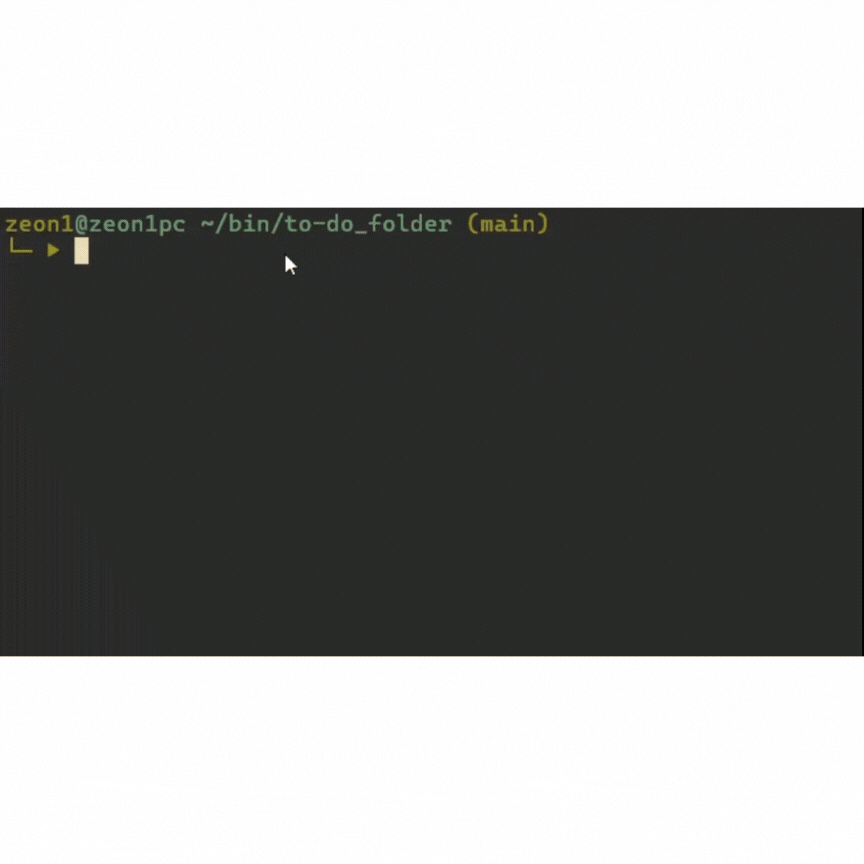

A streamlined attendance system built with
Arduino, RFID sensor, sound buzzer, and LED display.
Simple, reliable, and includes everything
you need for automated check-ins.
➵ Github

Manage your tasks directly from the command line!
This lightweight Bash script saves your to-do items to a file,
ensuring you never lose track of what needs to get done.
➵ Github
